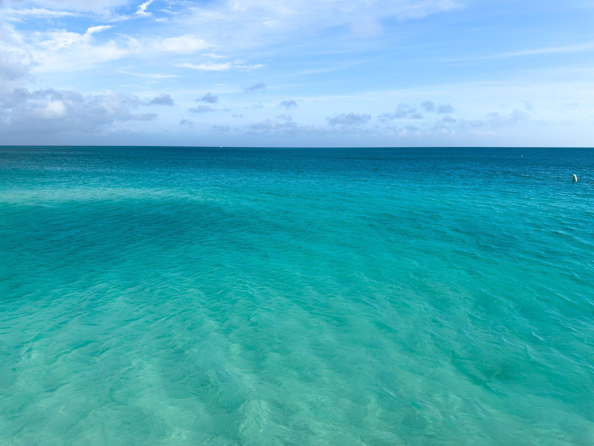
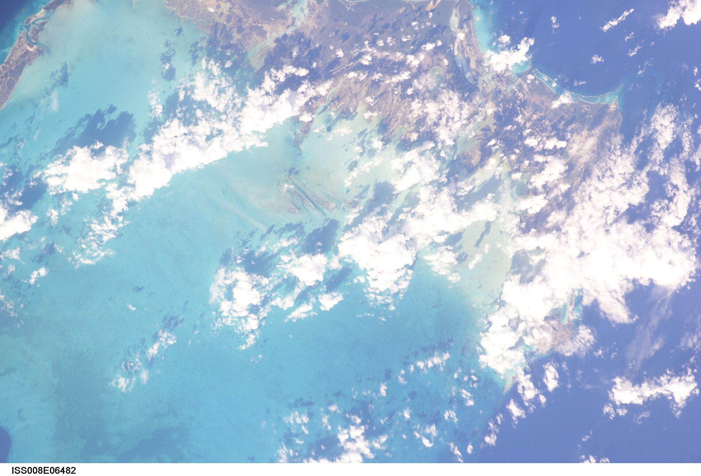
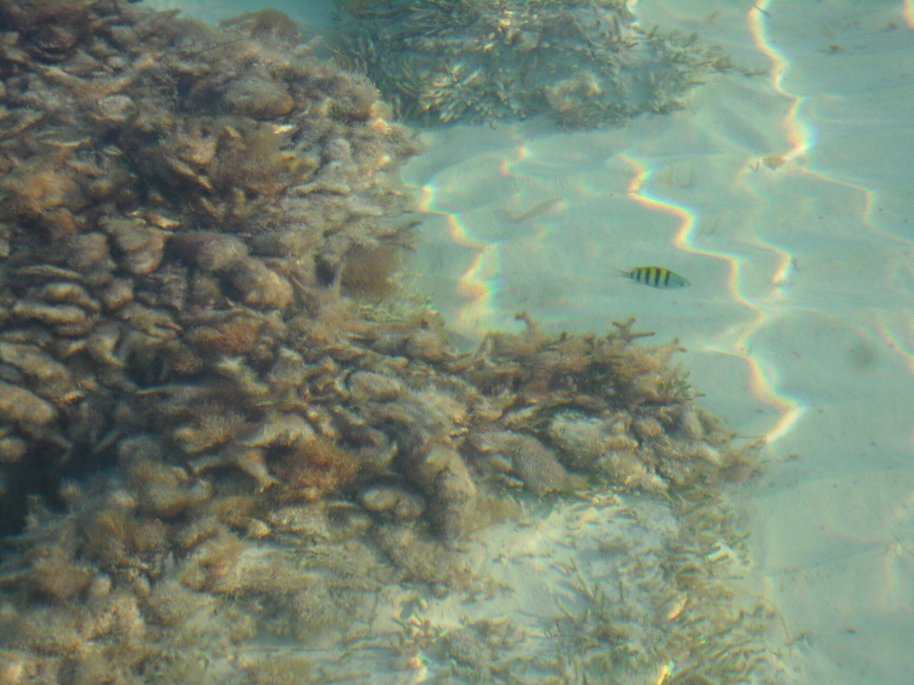
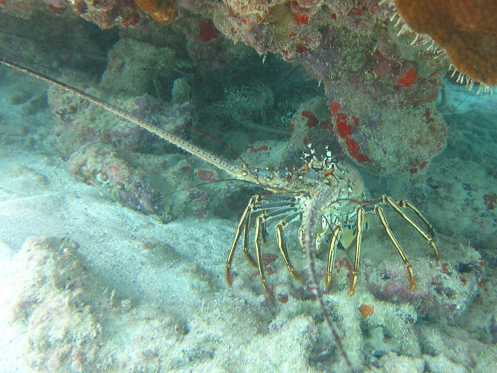
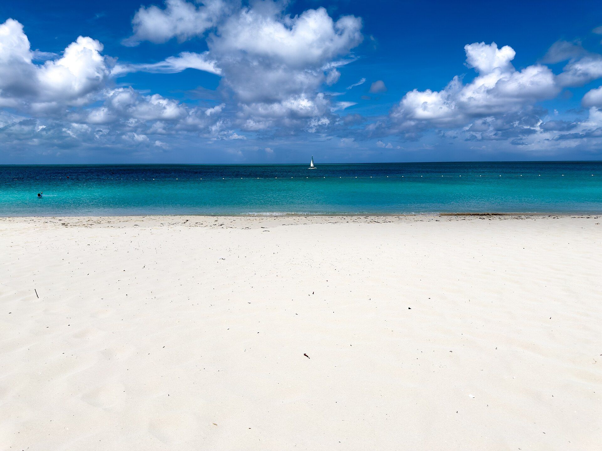

Four hundred feet off Long Bay, the sea is still only three to five feet deep. That's where the bar floats.
It's too far to swim out to, so come by our boat, your own boat or a jet ski.



Out on the deck
Swim off the ladder, eat off the grill


Captain Oak plays the music himself. There's a small dance floor, seats all round the bar, and a ladder down into the swim area, which is marked with buoys to keep boats and jet skis out.
Grill and bar
Cooked on the deck, poured at the bar.
Off the grill
- Hamburger
- RibsA favourite in guests' reviews
- Shrimp kebab
- Beef kebab
- Buttered grilled corn
- FishLocal, when in season
- Lobster tailCaribbean spiny lobster, season 1 August to 31 MarchIn season
From the bar
- The Incredible OakThe house drinkSignature
- Sneaky LinkSignature
- Toxic TikiSignature
- BeerBrewed here on the island, and imported
- Mixed drinksTop-shelf spirits
- No-alcohol drinks
By your own boat
- Drinks to your boatPull up alongside, or tie up your jet skiNo booking
Every day, noon until sunsetBring cash: card machines go offline at times
Getting out there
Book ahead. Call or WhatsApp to book the water taxi: $20 a person, out and back. On some days we can also collect you from your hotel for a little extra. Coming by your own boat or jet ski? No booking needed.
A short ride out. The boat leaves from the ferry pickup point at Heaving Down Rock, where Old Grace Drive meets Technology Drive, and crosses the shallows to the bar off Long Bay.
Down the ladder. Around the bar the sea is about three to five feet deep, depending on the tide. At low water it comes to your hips. At high water it can reach above your chin, so a float or a noodle helps.
Guests rate it
- Ratings
- 4.8 on Google, 47 reviews
- 4.9 on Tripadvisor, 35 reviews
- 4.8 across travel sites, about 113 reviews
- Google reviews, by stars
- 5 stars42
- 4 stars3
- 3 stars0
- 2 stars0
- 1 star2
- What guests mention
- Friendly staff
- Strong drinks
- Grilled lobster and ribs
- The $20 water taxi
- Fish around the deck
- Dancing on the water
- The sunset
Ratings from Google and Tripadvisor as shown on Wanderlog, and from VisitTCI, October 2026. What guests mention is Wanderlog's summary of their reviews.
Book the boat
Ferry pickup point, Heaving Down Rock
Old Grace Drive and Technology Drive
- Every day
- Noon to sunset
- Sunset today
- around 6pm
- Water taxi
- $20 round trip
- Busiest
- Sundays
Or call 649 345 6581, WhatsApp 649 232 1517 or email captoakstikibar@gmail.com. Hotel pickup on some days, for a little extra.
Bring cash, and plan to head back to shore before dark.